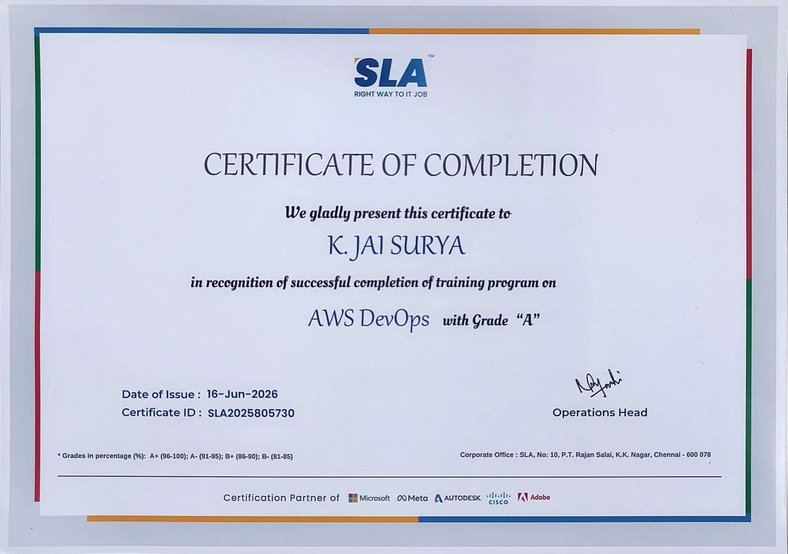
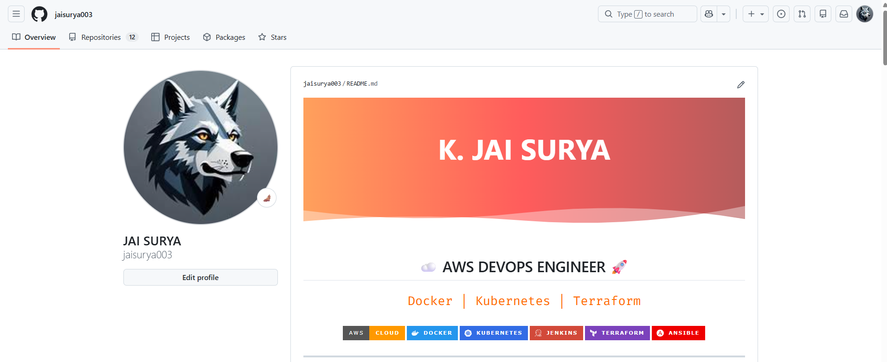

AWS Services
DevOps Tools
Major Projects
Certification
Motivated AWS DevOps Engineer with hands-on experience in AWS Cloud, CI/CD automation, containerization, Kubernetes orchestration, and Infrastructure as Code. Skilled in AWS services such as EC2, S3, IAM, VPC, EKS, ECR, RDS, and CloudWatch, along with DevOps tools including Jenkins, Docker, Kubernetes, Terraform, Ansible, Git, Argo CD, SonarQube, Trivy, Prometheus, and Grafana. Experienced in building automated deployment pipelines, managing cloud infrastructure, and implementing scalable, secure, and reliable solutions. Passionate about cloud technologies, automation, and continuous improvement, with a strong commitment to learning and delivering high-quality results.
EC2, IAM, VPC, S3, EBS, EFS, RDS, EKS, ECR, CloudWatch, Auto Scaling, ALB, Lambda, CloudFormation
Jenkins, Docker, Kubernetes, Terraform, Ansible, Argo CD, CI/CD Pipeline Automation
Git, GitHub
Linux (Ubuntu, Amazon Linux)
Prometheus, Grafana, CloudWatch
SonarQube, Trivy
Python, Java, Shell Scripting
MySQL
☁ AWS Cloud
🐳 Docker
☸ Kubernetes
⚙ Jenkins
🏗 Terraform
🔄 Ansible
📂 Git & GitHub
Built and automated a complete CI/CD pipeline using GitHub, Jenkins, SonarQube, Trivy, Docker, AWS ECR, Argo CD, Kubernetes, and Amazon EKS.
Academic Project using YOLOv8, Face Recognition, and Flutter.

Successfully completed 5 Months of AWS & DevOps Professional Training with hands-on experience in Cloud Infrastructure, CI/CD, Containerization, Kubernetes, Infrastructure as Code, Monitoring and Automation.

Active GitHub profile containing AWS cloud implementations, DevOps projects, Kubernetes deployments, Infrastructure as Code, automation workflows, and hands-on learning repositories.
Anand Institute of Higher Technology
2021 - 2025
CGPA: 8.1
📧 Email: jaisuryajai003@gmail.com
💻 GitHub: github.com/jaisurya003
🔗 LinkedIn: linkedin.com/in/jai-surya-k-89a948319